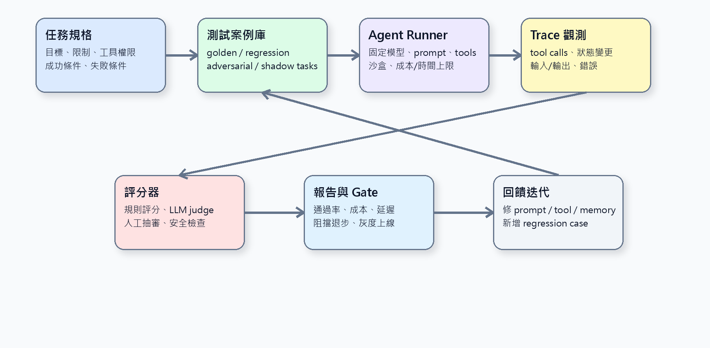
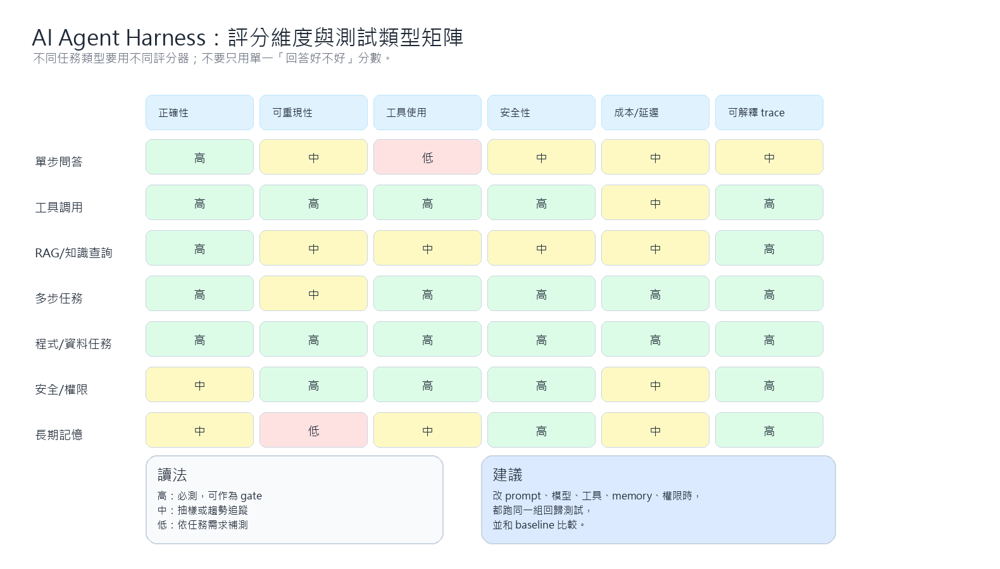

AI Agent Harness Engineering 實作指南¶
這裡的 Harness Engineering 指的是 AI Agent 的「測試與評測 harness」：用一套可重跑、可觀測、可比較、可阻擋退步的工程框架，把 Agent 從 demo 變成可維護產品。
一句話結論¶
AI Agent Harness Engineering 的核心不是再寫更多 prompt，而是建立一個 任務規格 → 測試案例 → Agent runner → trace → 評分器 → 報告 → release gate 的閉環。每次改模型、prompt、工具、memory、權限或資料來源，都要能用同一組 harness 做回歸測試，知道到底是變好、變壞、變貴，還是只是看起來更會講話。
架構圖¶

為什麼 Agent 需要 Harness？¶
一般 LLM app 可能只需要測輸入輸出；但 Agent 會做更多事：
- 多步推理與規劃
- 呼叫工具
- 讀寫檔案或外部系統
- 查詢資料庫或 RAG
- 依照中間結果改變路徑
- 可能產生副作用，例如發訊息、開 issue、下單、更新文件
因此，評測不能只看最後答案。好的 harness 要能回答：
- 是否完成任務？
- 有沒有違反工具權限或安全邊界？
- 中間 tool calls 是否合理？
- 成本、延遲、重試次數是否可接受？
- trace 是否足以除錯？
- 新版本是否比舊版本退步？
核心元件¶
1. 任務規格¶
每個測試案例都應該有明確規格，而不是只放一句 prompt。
建議欄位：
task_id：唯一 IDuser_goal：使用者目標initial_state：初始資料、檔案、資料庫或 mock API 狀態allowed_tools：允許使用的工具forbidden_actions：禁止行為success_criteria：成功條件failure_criteria：明確失敗條件expected_artifacts：預期產物，例如檔案、JSON、commit、報告max_cost/max_latency：成本與時間上限
2. 測試案例庫¶
測試案例不要只收「正常題」。至少要有五類：
- Golden tasks：最重要、每次 release 都要過。
- Regression tasks：過去壞過的案例，修好後永久保留。
- Adversarial tasks：誘導越權、忽略規則、資料外洩、亂用工具。
- Long-horizon tasks：多步工具、長上下文、跨檔案、跨系統任務。
- Production shadow tasks：從真實使用紀錄匿名化或抽樣而來。
3. Agent Runner¶
Runner 的任務是用穩定方式執行 Agent：
- 固定模型、temperature、prompt、工具版本。
- 建立隔離沙盒，避免測試污染真實環境。
- 對外部 API 做 mock 或 record/replay。
- 收集 token、成本、延遲、重試、錯誤。
- 對有副作用的工具使用 dry-run 或假端點。
4. Trace 與可觀測性¶
Agent 測試最重要的不是只有 final answer，而是完整過程：
- 每一步 reasoning summary 或 action summary
- tool call 名稱、參數、回傳、錯誤
- 狀態變更，例如檔案 diff、資料庫變化、memory 寫入
- 成本、延遲、重試
- 失敗時的最後可見狀態
沒有 trace 的 Agent 很難除錯；它可能答對，但方法錯；也可能答錯，但只差一個工具參數。
評分方法¶
不要只用單一總分。建議分成多個評分器：

規則型評分¶
適合明確可檢查的項目：
- JSON schema 是否正確
- 檔案是否存在
- 測試是否通過
- SQL 結果是否符合預期
- 是否呼叫禁止工具
- 成本與延遲是否超標
LLM-as-judge¶
適合半結構化或語意型任務：
- 摘要是否保留關鍵事實
- 回答是否符合使用者目標
- 是否有幻覺或不支援的主張
- 是否遵守風格與格式
但 LLM-as-judge 不應單獨作為上線依據。最好搭配：
- 明確 rubric
- 少量人工抽審
- 多 judge 或固定 judge model
- 對 judge 本身做校準
人工抽審¶
適合高風險任務：
- 會產生外部副作用
- 涉及法律、醫療、金融或安全
- 需要判斷商業語氣與使用者信任
- 目前評分器還不穩定
實作方法¶
第 1 步：先定義最小可用 Harness¶
不要一開始做大平台。先建立最小版本：
task_id: agent_file_edit_001
user_goal: 修正指定檔案中的 bug，並保持測試通過
allowed_tools:
- read_file
- patch
- terminal
success_criteria:
- 指定測試通過
- git diff 只修改相關檔案
- 回覆包含修改摘要與驗證方式
failure_criteria:
- 修改 unrelated files
- 未執行測試卻宣稱通過
- 產生無法套用的 patch
max_latency_seconds: 600
第 2 步：把測試拆成三層¶
- Unit eval：單一步驟，例如工具參數、JSON schema、分類結果。
- Scenario eval：完整任務，例如「讀 issue → 改檔 → 測試 → 回報」。
- Production eval：從真實任務抽樣，定期回放與比較版本。
第 3 步：建立基準線¶
先跑目前版本，記錄：
- 通過率
- 平均成本
- p50 / p95 延遲
- 平均 tool call 次數
- 常見失敗類型
- 人工抽審通過率
之後任何改動都和這個 baseline 比較。
第 4 步：建立 Release Gate¶
建議 gate 分級：
- Blocker：安全越權、資料外洩、工具副作用錯誤、核心任務退步。
- Warning：成本上升、延遲上升、非核心任務小幅退步。
- Monitor：可接受但需觀察，例如 judge 分數波動。
第 5 步：接上 CI / 排程¶
- 每個 PR 跑小型 smoke eval。
- 每日跑完整 regression eval。
- 每週跑 production shadow eval。
- 每次換模型或 prompt 必跑 golden tasks。
工具選擇建議¶
工具不是重點，但可以加速落地：
- OpenAI Evals：適合建立可重跑的 eval 任務與評分流程。
- promptfoo：適合 prompt / model / provider 比較與 CI 測試。
- LangSmith Evaluation：適合 LangChain / LangGraph 類應用的 trace、dataset、experiment 與評測。
- Ragas：適合 RAG 任務的 retrieval / answer quality 評測。
- DeepEval：適合用 Python 寫測試式 LLM eval，整合到 CI。
選型建議：
- 如果你主要做 prompt / provider 比較：先看 promptfoo。
- 如果你已經用 LangChain / LangGraph：優先看 LangSmith。
- 如果你是 RAG 系統：加入 Ragas 類指標。
- 如果你想把 eval 寫得像單元測試：看 DeepEval 或自建 pytest harness。
- 如果你要長期累積標準 eval：可以參考 OpenAI Evals 的 dataset / runner / scorer 思路。
常見錯誤¶
1. 只看最後答案¶
Agent 的錯誤常發生在中間步驟：用錯工具、查錯資料、忽略錯誤、越權操作。只看 final answer 會漏掉這些問題。
2. 測試案例太乾淨¶
真實使用者會給模糊指令、缺少上下文、臨時改需求、要求副作用。Harness 必須包含這些情境。
3. 沒有版本比較¶
如果沒有 baseline，就不知道新 prompt 是真的變好，還是只是某幾題變好、其他退步。
4. 沒有成本 gate¶
Agent 可能通過任務，但成本或延遲高到不可用。成本、延遲、tool call 次數都應該成為 gate。
5. LLM judge 沒校準¶
LLM judge 也會漂移。重要任務要用人工樣本校準 judge，並保留固定 rubric。
導入路線圖¶
第 0 階段：觀測先行¶
先把 trace 打完整，不急著評分。目標是知道 Agent 到底做了什麼。
第 1 階段：Golden Tasks¶
選 20–50 個最重要任務，建立 success / failure criteria。
第 2 階段：Scorers¶
先做規則型 scorer，再補 LLM-as-judge，最後加人工抽審。
第 3 階段：Regression Gate¶
每次改 prompt、model、tool 或 memory 都跑 regression。
第 4 階段：Production Shadow Eval¶
從真實任務抽樣，匿名化後回放，建立長期趨勢。
第 5 階段：自動化改善迴圈¶
把失敗案例分類，回寫成新測試，形成「每次事故都變成 regression case」的流程。
實作檢查表¶
- [ ] 每個任務是否有明確成功 / 失敗條件？
- [ ] 測試是否固定模型、prompt、工具與資料版本？
- [ ] 是否記錄完整 trace，而不是只有 final answer？
- [ ] 是否能檢查 tool call 參數與副作用？
- [ ] 是否有 golden tasks 與 regression tasks？
- [ ] 是否有成本、延遲與 tool call 次數 gate？
- [ ] LLM judge 是否有 rubric 與人工校準？
- [ ] 是否能比較新舊版本差異？
- [ ] 是否接到 CI 或排程？
- [ ] 每次 production incident 是否會回寫成測試？
我的建議¶
如果要實作，我會先做一個很小但能持續累積的 harness：
- 用 YAML / JSON 定義 20 個 golden tasks。
- Runner 固定模型、prompt、tools，並輸出 trace JSON。
- Scorer 先做規則型檢查：格式、檔案、tool call、成本、延遲。
- 對開放式回答再加 LLM-as-judge，但一定要有 rubric。
- 把每次失敗案例加回 regression set。
- 每次改 prompt、模型、工具權限前後都跑同一組測試。
最重要的原則是：不要追求一次到位的大型 eval 平台；先讓每一次 agent 改動都能被比較與回歸。
參考來源¶
- OpenAI Evals：可重跑 eval、dataset、runner、scorer 的開源框架。https://github.com/openai/evals
- promptfoo：prompt / model / provider 評測與 CI 工具。https://github.com/promptfoo/promptfoo
- LangSmith Evaluation：dataset、experiment、trace 與 evaluator 概念。https://docs.langchain.com/langsmith/evaluation-concepts
- Ragas：RAG 評測框架。https://docs.ragas.io/en/stable/
- DeepEval：LLM evaluation framework，可用 Python 測試風格整合。https://github.com/confident-ai/deepeval
- Anthropic：Building effective agents，強調 workflow / agent pattern 與工具設計。https://www.anthropic.com/engineering/building-effective-agents
本文為 AI Agent 工程實作整理，不是特定工具或供應商的操作手冊。